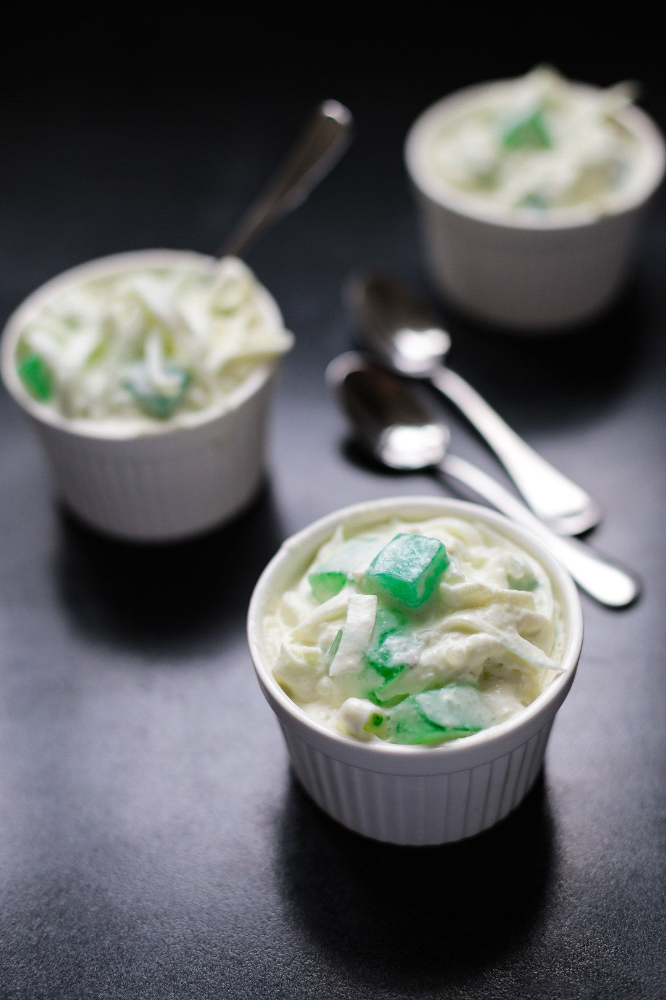

|

|
Description
Buko Pandan is a type of Filipino cold dessert made of jelly cubes, young coconut, and sweetened cream infused with pandan or screwpine flavor.
Although the above three are the standard ingredients, tapioca pearls or sago, kaong, and nata de coco are commonly added as well.
Ingredients
2 bars (.70 ounce) green agar-agar, shredded to very small pieces
3 cups coconut juice
1 cup sugar
4 drops pandan extract
2 cups shredded young coconut
1 bottle (12 ounces) Nata de coco, drained
1 bottle (12 ounces) Kaong, drained
1 can (14 ounces) table cream
1 can (14 ounces) sweetened condensed milk
Procedure
1. In a pot, combine agar agar and coconut juice and soak for about 30 minutes.
2. Bring to a boil over medium heat and cook, stirring regularly, until agar agar is melted.
3. Add sugar and stir to dissolve. Continue to cook for about 10 to 15 minutes or until agar agar is completely dissolved.
4. Add 2 drops of pandan extract and stir to combine.
5. Remove from heat and carefully pour into a flat dish. Allow to cool until gulaman is set and hardened. Cut into 1/2-inch cubes.
6. In a large bowl, combine gulaman, young shredded coconut, nata de coco, kaong, table cream, and condensed milk.
7. Add about 2 to 3 drops pandan extract and stir to distribute flavor and color. Chill for about 1 to 2 hours. Serve cold.
Price
P15 / serving
|